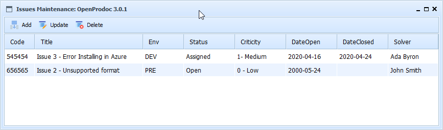

Help SMO Product Version Issues
.This form display tthe list of versions of a product
With the default configuration, the list area display the columns:
- Internal Issue Code: Internal unique Code/Identifier of the Issue
- Title: Short description of the issue
- Environment: Environemnt which the error ocurred
- Status: One of the possible status defined (pending, solved, assigned, waiting,..)
- Criticity: One of the possible levels of criticity defined (Critical, non blocking,..
- Date Open: Date in which the Issue was open
- Date Closed: Date in which the Issue was vlosed
- Technical Assigned: Technical who is analizing and solving the issue
Selecting a products, and always if the security permissions asigned allow it, it is possible to use the options:
- Add: Displays a form for adding a new issue of the current product version.
- Update: Displays a form for updating the selected issue.
- Delete: Displays a form for confirmation before deleting the selected issue and ALL its folders and documents.

In SMO Tree there is a complete view of operations and forms.